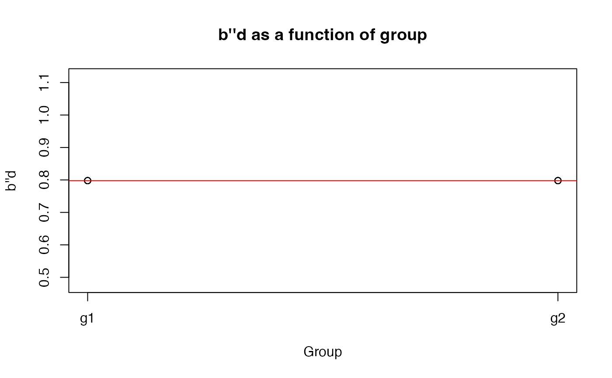

This function allows you to calculate b double prime d from a vector hits and a vector of false alarms.
bPrimed(data, h, f)# Create some data
set.seed(1); library(dplyr)
axb <- data.frame(subj = sort(rep(1:10, each = 20, times = 10)),
group = gl(2, 1000, labels = c("g1", "g2")),
hit = c(rbinom(1000, size = c(0, 1), prob = .8),
rbinom(1000, size = c(0, 1), prob = .6)),
fa = c(rbinom(1000, size = c(0, 1), prob = .3),
rbinom(1000, size = c(0, 1), prob = .4))
)
# Calculate b''d on entire data frame
bPrimed(axb, hit, fa)
#> [1] 0.7979252
# Calculate b''d for each subject
# by group, plot it, and run a
# linear model
axb %>%
group_by(subj, group) %>%
summarize(bdpd = bPrimed(., hit, fa)) %T>%
{
plot(bdpd ~ as.numeric(group), data = .,
main = "b''d as a function of group", xaxt = "n",
xlab = "Group", ylab = "b''d")
axis(1, at = 1:2, labels = c("g1", "g2"))
abline(lm(bdpd ~ as.numeric(group), data = .), col = "red")
} %>%
lm(bdpd ~ group, data = .) %>%
summary()
#> `summarise()` has grouped output by 'subj'. You can override using the
#> `.groups` argument.

#> Warning: essentially perfect fit: summary may be unreliable
#>
#> Call:
#> lm(formula = bdpd ~ group, data = .)
#>
#> Residuals:
#> Min 1Q Median 3Q Max
#> -4.524e-17 -4.524e-17 0.000e+00 0.000e+00 1.810e-16
#>
#> Coefficients:
#> Estimate Std. Error t value Pr(>|t|)
#> (Intercept) 7.979e-01 3.199e-17 2.494e+16 <2e-16 ***
#> groupg2 -4.524e-17 4.524e-17 -1.000e+00 0.347
#> ---
#> Signif. codes: 0 ‘***’ 0.001 ‘**’ 0.01 ‘*’ 0.05 ‘.’ 0.1 ‘ ’ 1
#>
#> Residual standard error: 7.153e-17 on 8 degrees of freedom
#> Multiple R-squared: 0.5464, Adjusted R-squared: 0.4897
#> F-statistic: 9.635 on 1 and 8 DF, p-value: 0.01458
#>